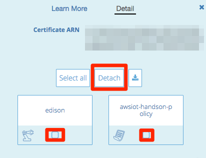

8. ハンズオン終了後
ハンズオン終了後には以下の設定を削除してください。
8.1. AWS IoTのリソース削除
AWS IoTの証明書、ポリシー、デバイスを削除するためには、削除前にアタッチされているリソースをデタッチする必要があります。（ルールは他のリソースとの関連性はありません）
- マネージメントコンソールのサービス一覧から[AWS IoT]をクリックします。
- リソース一覧から削除したい証明書を選択します。
- 右の詳細画面より、関連付けられているデバイスおよびポリシーを選択し、[Detach]をクリックします。

- リソース一覧から削除したいリソースを選択し、”Actions”のメニューから[Revoke]をクリックします。